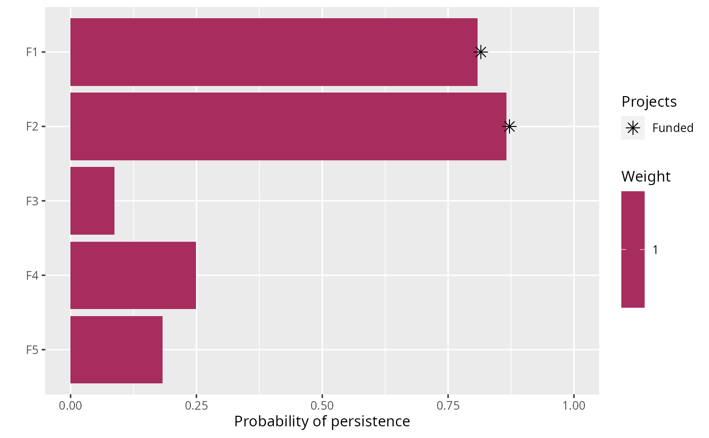
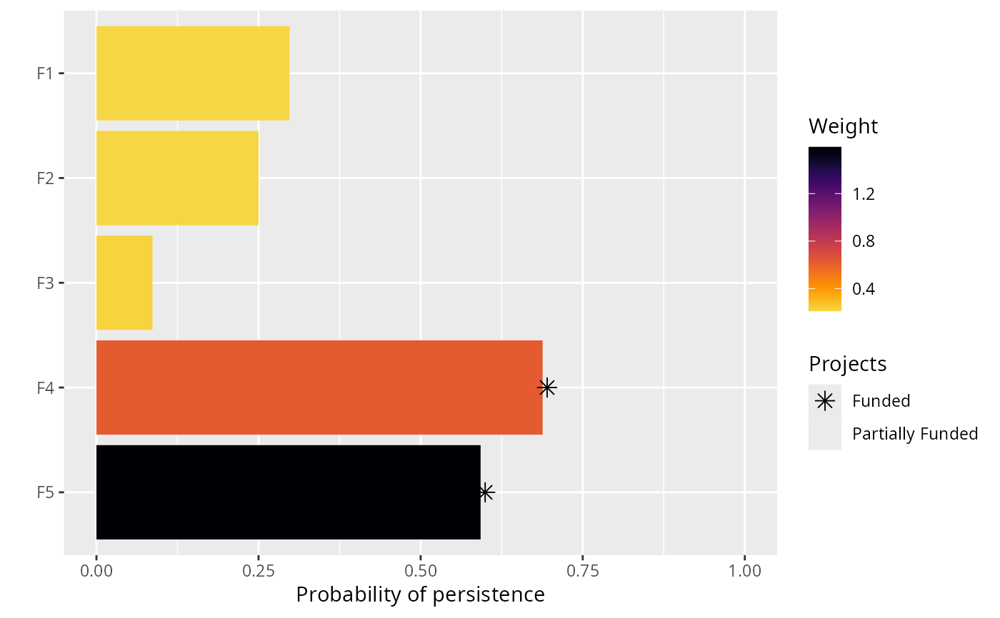
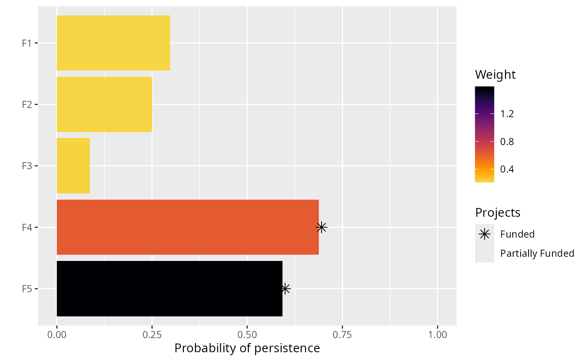

Set weights for conserving features in a project prioritization
problem.
# S4 method for ProjectProblem,numeric add_feature_weights(x, weights) # S4 method for ProjectProblem,character add_feature_weights(x, weights)
| x |
|
|---|---|
| weights | Object that specifies the weights for each feature. See the Details section for more information. |
Weights are used to specify the relative importance for
maintaining the persistence of specific features. For budget constrained
problems (e.g. add_max_richness_objective), these
weights
could be used to specify which features are more important than other
features according to evolutionary or cultural metrics. Specifically,
features with a higher weight value are considered more important. It is
generally best to ensure that the feature weights range between 0.0001 and
10,000 to reduce the time required to solve problems using exact
algorithm solvers. As a consequence, you might have to rescale the feature
weights if the largest or smallest values occur outside this range
(excluding zeros). If you want to ensure that certain features conserved
in the solutions, it is strongly recommended to lock in the actions for
these features instead of setting really high weights for these features.
Please note that a warning will be thrown if you attempt to solve
problems with weights when an objective has been specified that does
not use weights. Currently, all objectives---except for the minimum
set objective (i.e. add_min_set_objective)---can use weights.
The weights for a problem can be specified in several different ways:
numericvector of weight values for each feature.
characterspecifying the name of column in the
feature data (i.e. the argument to features in the
problem function) that contains the weights.
#> # A tibble: 5 x 2 #> name weight #> <chr> <dbl> #> 1 F1 0.211 #> 2 F2 0.211 #> 3 F3 0.221 #> 4 F4 0.630 #> 5 F5 1.59# build problem with maximum richness objective, $300 budget, and no weights p1 <- problem(sim_projects, sim_actions, sim_features, "name", "success", "name", "cost", "name") %>% add_max_richness_objective(budget = 200) %>% add_binary_decisions() # print problem print(p1)#> #> #> #> #> #> #> #> #> #> #> #># build another problem, and specify feature weights using the values in the # "weight" column of the sim_features table by specifying the column # name "weight" p2 <- p1 %>% add_feature_weights("weight") # print problem print(p2)#> #> #> #> #> #> #> #> #> #> #> #># build another problem, and specify feature weights using the # values in the "weight column of the sim_features table, but # actually input the values rather than specifying the column name # "weights" column of the sim_features table p3 <- p1 %>% add_feature_weights(sim_features$weight) # print problem print(p3)#> #> #> #> #> #> #> #> #> #> #> #>#> Optimize a model with 47 rows, 47 columns and 102 nonzeros #> Variable types: 0 continuous, 42 integer (42 binary) #> Semi-Variable types: 5 continuous, 0 integer #> Coefficient statistics: #> Matrix range [9e-02, 1e+02] #> Objective range [1e+00, 1e+00] #> Bounds range [1e+00, 1e+00] #> RHS range [1e+00, 2e+02] #> Found heuristic solution: objective 1.4456093 #> Presolve removed 16 rows and 12 columns #> Presolve time: 0.00s #> Presolved: 31 rows, 35 columns, 65 nonzeros #> Variable types: 0 continuous, 35 integer (35 binary) #> Presolved: 31 rows, 35 columns, 65 nonzeros #> #> #> Root relaxation: objective 2.190381e+00, 11 iterations, 0.00 seconds #> #> Nodes | Current Node | Objective Bounds | Work #> Expl Unexpl | Obj Depth IntInf | Incumbent BestBd Gap | It/Node Time #> #> * 0 0 0 2.1903807 2.19038 0.00% - 0s #> #> Explored 0 nodes (11 simplex iterations) in 0.00 seconds #> Thread count was 1 (of 4 available processors) #> #> Solution count 1: 2.19038 #> #> Optimal solution found (tolerance 0.00e+00) #> Best objective 2.190380737245e+00, best bound 2.190380737245e+00, gap 0.0000%#> Optimize a model with 47 rows, 47 columns and 102 nonzeros #> Variable types: 0 continuous, 42 integer (42 binary) #> Semi-Variable types: 5 continuous, 0 integer #> Coefficient statistics: #> Matrix range [9e-02, 1e+02] #> Objective range [2e-01, 2e+00] #> Bounds range [1e+00, 1e+00] #> RHS range [1e+00, 2e+02] #> Found heuristic solution: objective 0.6654645 #> Presolve removed 16 rows and 12 columns #> Presolve time: 0.00s #> Presolved: 31 rows, 35 columns, 65 nonzeros #> Variable types: 0 continuous, 35 integer (35 binary) #> Presolved: 31 rows, 35 columns, 65 nonzeros #> #> #> Root relaxation: objective 1.511230e+00, 11 iterations, 0.00 seconds #> #> Nodes | Current Node | Objective Bounds | Work #> Expl Unexpl | Obj Depth IntInf | Incumbent BestBd Gap | It/Node Time #> #> * 0 0 0 1.5112297 1.51123 0.00% - 0s #> #> Explored 0 nodes (11 simplex iterations) in 0.00 seconds #> Thread count was 1 (of 4 available processors) #> #> Solution count 1: 1.51123 #> #> Optimal solution found (tolerance 0.00e+00) #> Best objective 1.511229665304e+00, best bound 1.511229665304e+00, gap 0.0000%#> Optimize a model with 47 rows, 47 columns and 102 nonzeros #> Variable types: 0 continuous, 42 integer (42 binary) #> Semi-Variable types: 5 continuous, 0 integer #> Coefficient statistics: #> Matrix range [9e-02, 1e+02] #> Objective range [2e-01, 2e+00] #> Bounds range [1e+00, 1e+00] #> RHS range [1e+00, 2e+02] #> Found heuristic solution: objective 0.6654645 #> Presolve removed 16 rows and 12 columns #> Presolve time: 0.00s #> Presolved: 31 rows, 35 columns, 65 nonzeros #> Variable types: 0 continuous, 35 integer (35 binary) #> Presolved: 31 rows, 35 columns, 65 nonzeros #> #> #> Root relaxation: objective 1.511230e+00, 11 iterations, 0.00 seconds #> #> Nodes | Current Node | Objective Bounds | Work #> Expl Unexpl | Obj Depth IntInf | Incumbent BestBd Gap | It/Node Time #> #> * 0 0 0 1.5112297 1.51123 0.00% - 0s #> #> Explored 0 nodes (11 simplex iterations) in 0.00 seconds #> Thread count was 1 (of 4 available processors) #> #> Solution count 1: 1.51123 #> #> Optimal solution found (tolerance 0.00e+00) #> Best objective 1.511229665304e+00, best bound 1.511229665304e+00, gap 0.0000%#> # A tibble: 1 x 21 #> solution status obj cost F1_action F2_action F3_action F4_action F5_action #> <int> <chr> <dbl> <dbl> <dbl> <dbl> <dbl> <dbl> <dbl> #> 1 1 OPTIM… 2.19 195. 1 1 0 0 0 #> # … with 12 more variables: baseline_action <dbl>, F1_project <dbl>, #> # F2_project <dbl>, F3_project <dbl>, F4_project <dbl>, F5_project <dbl>, #> # baseline_project <dbl>, F1 <dbl>, F2 <dbl>, F3 <dbl>, F4 <dbl>, F5 <dbl>print(s2)#> # A tibble: 1 x 21 #> solution status obj cost F1_action F2_action F3_action F4_action F5_action #> <int> <chr> <dbl> <dbl> <dbl> <dbl> <dbl> <dbl> <dbl> #> 1 1 OPTIM… 1.51 199. 0 0 0 1 1 #> # … with 12 more variables: baseline_action <dbl>, F1_project <dbl>, #> # F2_project <dbl>, F3_project <dbl>, F4_project <dbl>, F5_project <dbl>, #> # baseline_project <dbl>, F1 <dbl>, F2 <dbl>, F3 <dbl>, F4 <dbl>, F5 <dbl>print(s3)#> # A tibble: 1 x 21 #> solution status obj cost F1_action F2_action F3_action F4_action F5_action #> <int> <chr> <dbl> <dbl> <dbl> <dbl> <dbl> <dbl> <dbl> #> 1 1 OPTIM… 1.51 199. 0 0 0 1 1 #> # … with 12 more variables: baseline_action <dbl>, F1_project <dbl>, #> # F2_project <dbl>, F3_project <dbl>, F4_project <dbl>, F5_project <dbl>, #> # baseline_project <dbl>, F1 <dbl>, F2 <dbl>, F3 <dbl>, F4 <dbl>, F5 <dbl>